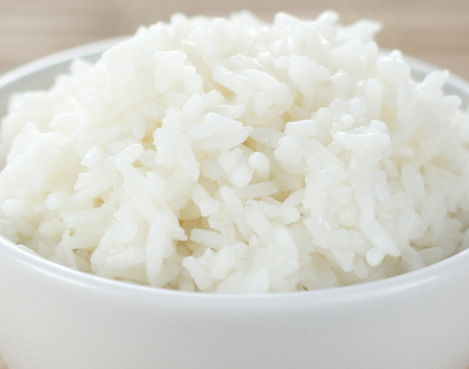

White Rice

Description
White rice, easy to make!
Ingredients
- 3 cups water
- 2 cups white rice
- A small amount of salt
Steps
- Wash rice in strainer under running water for a few minutes.
- Bring 3 cups of water to a boil, adding however much salt you feel is needed.
- Add rice to the boiling water.
- Stir for a few seconds and then turn heat to low.
- Cover saucepan with lid and let sit for 20 minutes.
- Turn off heat and let sit for 5 more minutes
- Fluff with a fork and enjoy from there!